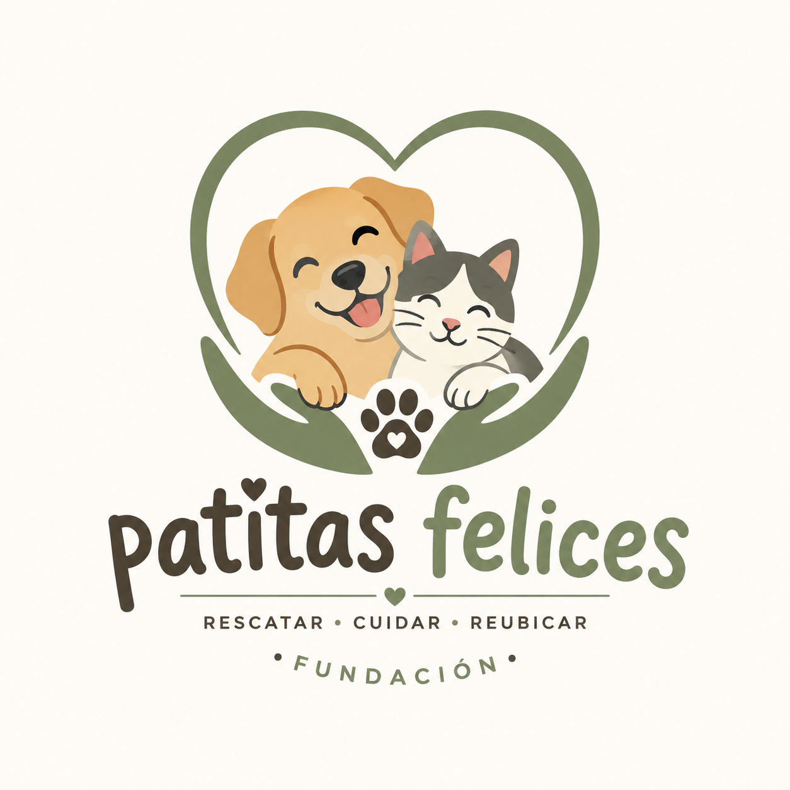

Fundacion PATITAS FELICES
"Cambiando el Abandono por Amor y un Hogar"
Labor de nuestra fundacion
Patitas Felices
En la Fundación Patitas Felices trabajamos día a día por el bienestar y la protección de los animales que han sido víctimas de abandono, maltrato o negligencia. Nuestra labor se centra en el rescate, cuidado, recuperación y reubicación responsable de perros, gatos y otros animales que necesitan una segunda oportunidad. Les brindamos alimentación, atención veterinaria, refugio seguro y el acompañamiento necesario para que puedan recuperarse física y emocionalmente. Además, promovemos la adopción responsable, desarrollamos campañas de concientización sobre el respeto hacia los animales y fomentamos la esterilización como una medida fundamental para reducir la sobrepoblación y el abandono. Creemos que cada animal merece vivir con amor, seguridad y dignidad, por lo que trabajamos junto a voluntarios, adoptantes y la comunidad para construir un entorno más solidario y comprometido con la protección animal. Nuestra mayor recompensa es ver a cada animal rescatado encontrar un hogar lleno de cariño y una nueva oportunidad para ser feliz. 🐾


Más sobre nosotros: